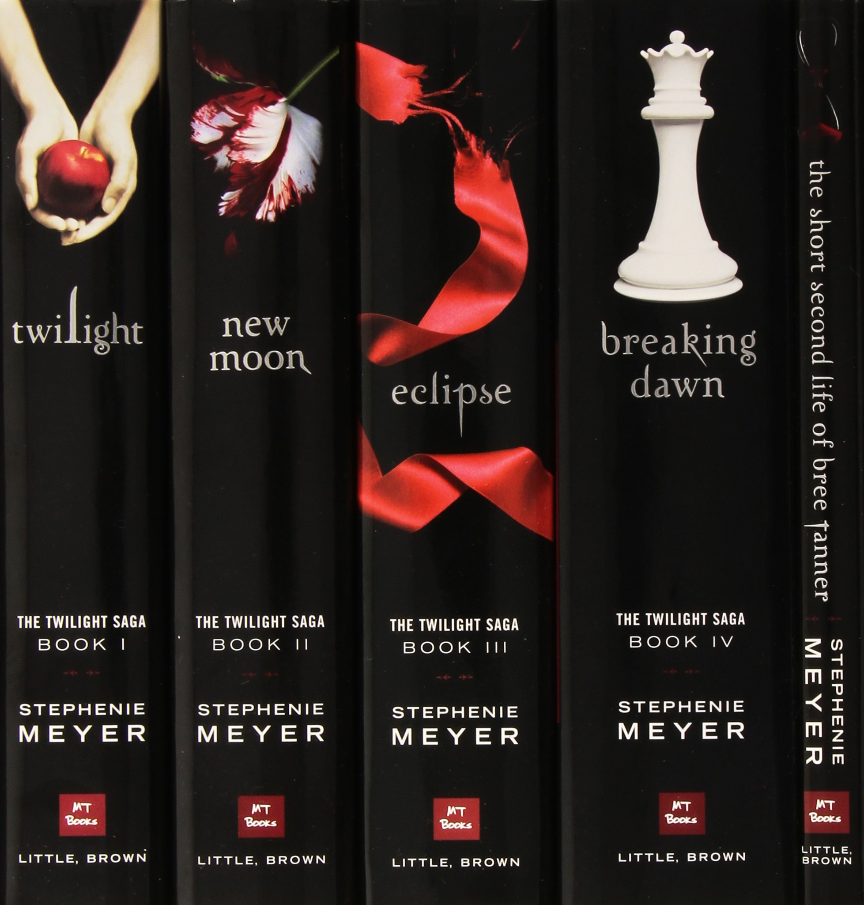
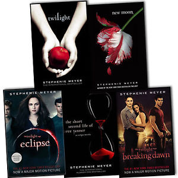

Twilight tells the story of Bella Swan and the vampire she falls in love with, Edward Cullen. Bella moves to the small and rainy town of Forks, Washington, to live with her father after her mother remarries. She hates the rain, but at least she fits in better in Forks than she did in her huge high school in Phoenix, Arizona. On her first day of school she sees Edward Cullen, one of a group of five students, all of whom seem inhumanely beautiful and aloof toward the rest of the school. Bella is hypnotized by Edward’s good looks, but for some reason, his first response to her is incredibly negative, and she even overhears him trying to switch out of the biology class they have together. He slowly begins to become less hostile, although he warns her that it would be better for her to stay away.
One day, when Bella is almost crushed by an out of control minivan, he saves her life. She cannot quite understand how he did it, though. Right before the crash, she saw him across the parking lot from her. When some of the students take a trip to the beach, Bella meets Jacob Black, the son of her father’s good friend Billy Black and a member of the La Push reservation. She gets Jacob to explain why the Cullens won’t come to La Push, and he tells her it is because of some old legends that his people have that the Cullens are vampires, and while they do not feed on humans, they are still not welcome on the reservation. Bella suspects that this may actually be true, but she decides that even if it is, she doesn’t care. When she confronts Edward about it, he tells her the truth. He explains that this is why she should stay away from him--even though he chooses not to hunt humans, he is especially drawn by her smell and may not be able to resist her. She cannot stay away, though, because she has fallen in love with him. Likewise, he is too much in love to push her away, even for her own good.


He takes her to watch while he and his family play vampire baseball, and while they are there, another, more violent vampire coven comes by. The leader, a very old, very lethal vampire named James, catches Bella’s scent, and when Edward defends her, he sees a chance to engage in a challenging hunt. Edward knows—because he can read minds—that James won’t give up until he has killed her. Bella and all of the Cullens come up with a plan to try to get her to safety while also protecting her family—taking her to Phoenix—but James is clever and manages to trick Bella into coming to see him alone (she believes it is to save her mother’s life). There he almost kills her, but the other vampires arrive in time, and Edward saves her. He has bitten her, though, and Edward must use all of his self-control to suck just enough of her blood to get the vampire venom out without killing her. He succeeds, and Bella is left with only a few broken bones and a cut on her forehead. Bella heals and goes back to Forks, where Edward surprises her by taking her to the prom. She tells him that she wants him to change her into a vampire too so that she can be with him forever, but he is staunchly against it, not wanting to take her life from her while she still has another choice—and while she still has her family.
Stephenie Meyer, born on December 24, 1973, in Hartford, Connecticut, is the best-selling author of the Twilight book series. Inspired by a dream, she wrote the first book and attracted the attention of agent Jodi Reamer, who secured her a three-book publishing deal. The books have sold more than 250 million copies, been translated into 37 languages, and adapted for a hit film series that includes five installments. Author Stephenie Meyer was born Stephenie Morgan on December 24, 1973, in Hartford, Connecticut, to Stephen and Candy Morgan. Meyer has called the uncommon spelling of her first name "a gift from [her] father," who added the letters "i" and "e" to the end of his name to create "Stephenie."Four years after Meyer's birth, her family relocated to Phoenix, Arizona. As the second of six children, Meyer took on the duties associated with being an elder sibling in a large Mormon family. Between caring for her younger brothers and sisters, she developed a passion for reading, becoming an avid fan of classic authors Jane Austen, Charlotte Bronte and Margaret Mitchell, among others. Though Meyer felt out of place among the privileged population of Chaparral High School in Scottsdale, Arizona, she was an excellent student. Graduating from the school in 1992, her high marks earned her a National Merit Scholarship. She used the award to attend Brigham Young University, where she majored in English literature.